How this site is made. Every tile is a small 3D scene built by a script, shown as line art until you hover over it, when it turns into the render.
The site itself is plain HTML, CSS and a little JavaScript, with no framework and no build step. This page covers the look, the layout, how the project list works, the pipeline behind the tiles, and how the line art moves.

The look
The work should be the loudest thing on the page, so the site stays out of the way.
- 1 font
- 1 background
- 1 accent
- 2 themes
Light and dark
The switch in the header swaps one set of colours for another. The light theme uses a soft off-white rather than stark white, and a deeper teal, because the dark theme's teal is too pale to read on a light page.
The site opens in whatever the device is set to, remembers a choice on every page after it, and sets the theme before anything is drawn, so a page never flashes the wrong colours.
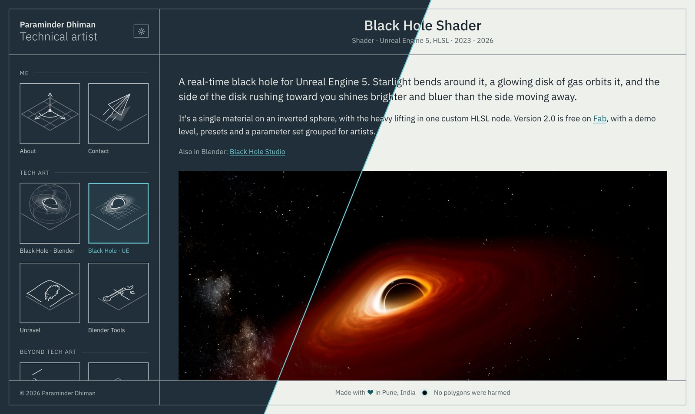
Colour
Every colour is a variable at the top of one stylesheet, so a change happens in one place. Each pair was checked so text reads as easily in one theme as in the other.
The frame
The page is one grid laid over a sheet of the frame colour, with a 1px gap between its boxes. The lines are that colour showing through the gaps, so every box lines up without a single border drawn by hand.
Type
AaAaAaAa
IBM Plex Sans in four weights, hosted with the site so nothing loads from elsewhere. Text never runs wider than 1200 pixels, so lines stay easy to read on big screens.
Tiles as one family
Every tile shares one camera, one set of lights and one plate, which lands on exactly the same pixels each time. Only the object standing on it changes, so a new project always looks like it belongs.
Layout and scrolling
On a desktop the frame stays put and only the content moves. On a phone, the frame gets out of the way.
A fixed frame
On larger screens the frame fills the window. The header, the tile rail and the footer stay in view, and only the page content scrolls.
When there are more tiles than fit, the rail gets a scroll of its own, held inside the rail so it never drags the page along with it.
Phones
A fixed frame would leave a sliver of a phone for reading, so on phones the page is just the header, the title and the content. The tiles move into a menu behind the Projects button, and the header stays pinned, so the menu is always one tap away.
The menu borrows from Windows Phone's live tiles: big lowercase group names and square tiles, with a few twice as wide so every group closes as a full block. The tiles turn in as renders, then flip over and draw their line art as they turn. The current page's tile keeps its render, which marks where you are.
Keyboard first
With only the content scrolling, the arrow keys, Page Down and Space need somewhere to go. The content is focused quietly on load, so they work straight away.
Short windows
Desktop windows too short for the fixed frame fall back to a normal scrolling page, with the rail kept in place.
Sizes that breathe
The rail, the side spacing and the tile gaps grow with the window between set limits, so one layout holds from a laptop to a wide monitor.
Projects from one list
Every project is one entry in one list, and everything that shows a project is built from it.
Adding a project is one edit. The entry below is all it takes for the Toon Shader to get its tile in the rail, its place in the phone menu and its row in the work list on the About page, once its status is set to live.
{
id: "stylized-toon-shader", the page, and the tile's files
title: "Stylized Toon Shader", the work list
tile: "Toon Shader · UE", under the tile
meta: "Shader · Unreal Engine 5, HLSL · 2026",
group: "tech-art", which heading it sits under
scale: 3, used for sorting
year: 2026,
pin: 3,
status: "draft", live, draft or planned
}
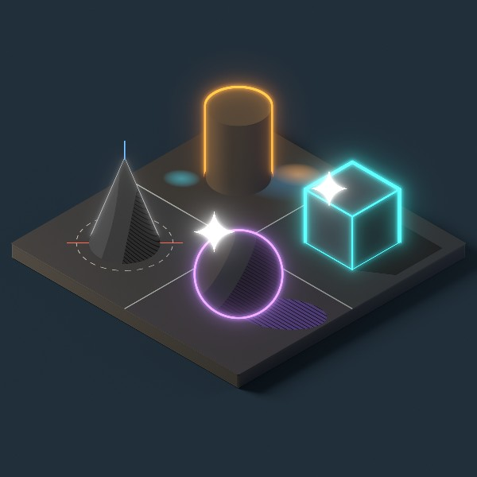
Sorted by itself
Inside a group, projects sort in three passes, so a new one lands in the right place without moving anything.
- Pinned firstThe ones I want seen first, in the order I pin them.
- Then biggerLarger projects ahead of smaller ones.
- Then newerThe most recent ahead of older work.
Groups
The rail opens with Me, About and Contact, then two groups: tech art, and work beyond it. The same names head the rail, the work list and the phone menu.
Drafts stay private
Each project is live, draft or planned. Visitors only see live ones, but on my own computer the site shows the rest too, so I can preview a page before it's published.
A way to get in touch
Every page except Contact ends with a short "Like my work? Get in touch" line, added by the same script, so no page needs it written in.
Tile pipeline
One script builds the scene, and one render makes everything a tile needs.
- 1 shared template
- 35.264° camera angle
- 3 image sizes
- 0 lines drawn by hand
One camera, one frame
Every tile shares a template: the studio, the camera, the compositor, the saving and the line art. Only the part that builds the scene changes. The camera is orthographic at the true isometric angle, with a warm key light and a cool fill.
The first tiles were framed one by one, by eye, and side by side some plates sat lower or smaller than others. Now the camera's aim and zoom live in one shared block, and each tile fits its object to the frame instead.
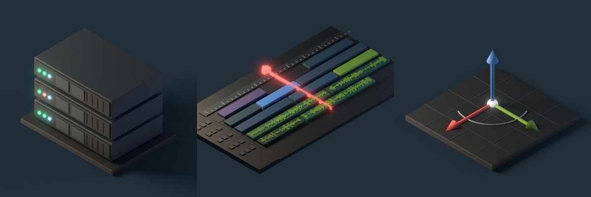
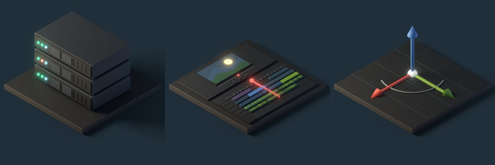
Rendered clear
Each tile renders with a transparent background and a shadow catcher. The compositor lays that one render onto each theme's exact background colour, so the shadows sit on the page in both themes with no visible edge, and a single F12 makes both tiles.
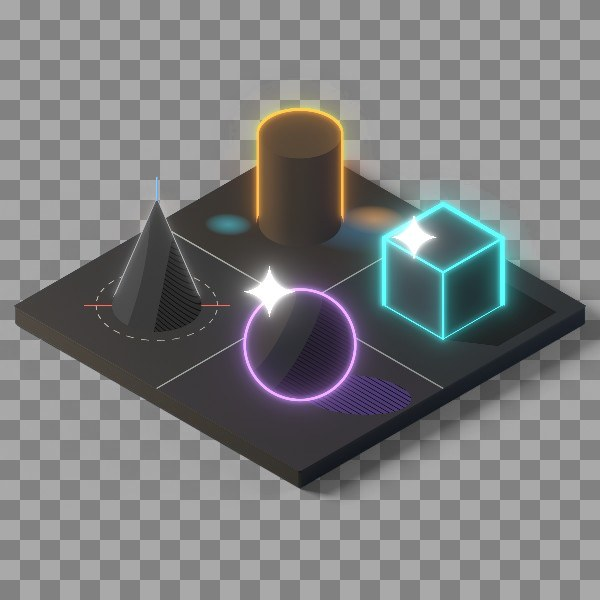
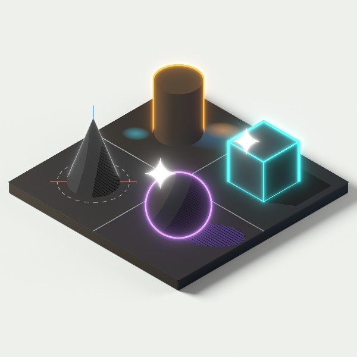
Bloom only where it glows
The glow comes from the emission pass alone, capped so very bright parts don't take over, with three blurs, tight, medium and wide, scaled to the image size.
Glass was the exception. On the light background its own glow turned the whole sphere milky, so glass now goes into a separate light group that is taken out of the bloom.
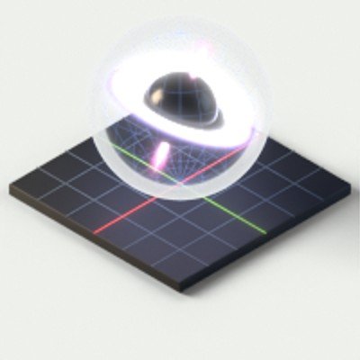
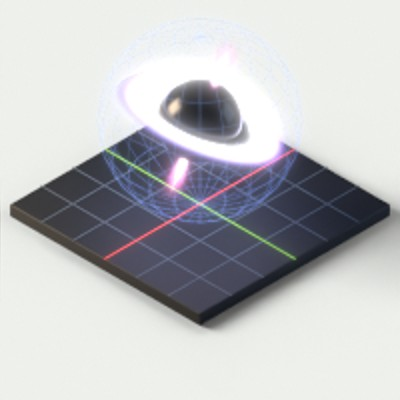
Line art from the geometry
The line art isn't edge detection on the image. Each tile lists what to draw by object name, and those real 3D points are projected through the render camera into a clean SVG. Laid over the render, it lands exactly on the shapes.
It's saved on every F12, so it always matches the scene as it is, and moving something can never leave the two out of step.
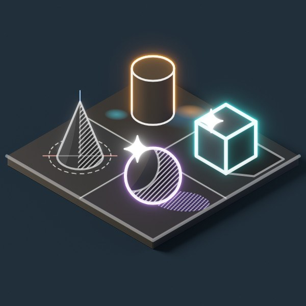
From sketch to tile
New tiles start as quick flat sketches in the browser, where layouts and colours are cheap to try. The one I pick becomes the build script, and the render is checked against the sketch.
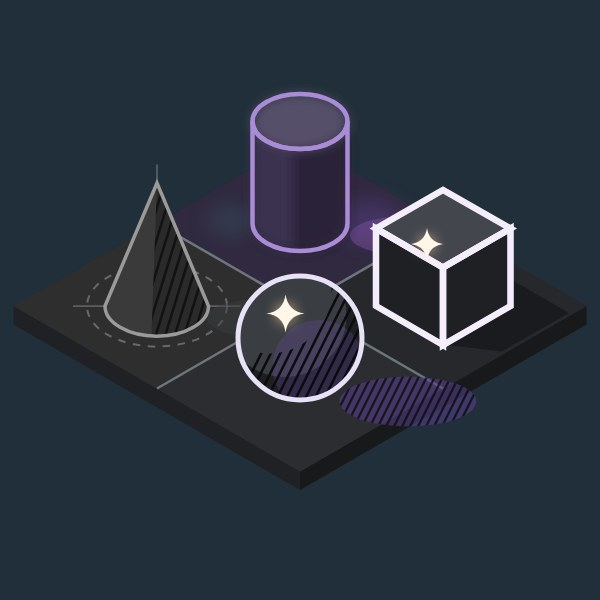
Palette rules
Objects are near-black. The accents are Blender's red, green and blue axis colours, and each tile gets its own glow colour, so no two tiles light up the same way.
More than lines
Each line art entry has a kind: an outline, a line, a dot, a filled shape or a soft fog ring. Lines that pass behind an object are hidden, so the drawing reads the way the render does.
Lensing on a tile
Real lensing would need a custom renderer, so the black hole tile fakes it in the geometry: the far half of the disk folds up behind the hole. The line art follows it for free.
On the page
Each tile stacks its line art and its render. On touch screens, which can't hover, the current tile keeps its render.
Line art in motion
The line art is real SVG lines, not a picture, so the browser can draw each one along its length. Everything that moves on the tiles is built on that.
Drawing in, pulling back
When the site opens, every tile traces itself in, one after another, top to bottom. It plays once per visit, so moving between pages stays calm.
Hovering pulls the lines back off the tile while the render fades in underneath. Leaving draws them back over the render as it fades out. In the light theme, dark lines would vanish against the render, so they turn white while it shows and ease back on the same timing.
What I tried first
The first leave effect was a soft wipe across the render. It looked good on its own, but it was louder than the work it framed. A dim and fade was too flat. The line draw sat in between: noticeable, quick, and about the tile itself.
Recorded on an early version of the site, with older tiles.
Timing
Each line starts a little after the one before, so a tile draws as a sweep. Drawing in eases out and pulling back eases in, so both read as one motion played forward and back. Hovering is faster than arriving, so it never feels like waiting.
No stray dots
Lines have round ends, and a round end on a line of zero length still paints a dot. Every line is pushed a few pixels past its own end before it starts, so an undrawn tile is truly empty.
A bubble that grows
One tile breaks the rule on purpose. A sphere traced along its length reads as flat circles, so the Black Hole · Blender tile's lens sphere grows out of the hole like an air bubble instead: it swells from the centre while its outline sweeps round, its rings follow, and two pole-to-pole lines spin once and fade.
The tile script saves the sphere's size and the camera's projection into the SVG, so the browser works out every frame in 3D, including the part sunk into the plate. Hovering plays it backwards.
A small black hole
The dot in the footer is a tiny black hole. Click it and it swallows the footer, letter by letter, caves in to a point, then bursts and throws every letter back into place.
Finding the moment
The first versions pulled the letters into orbit and let them go, but nothing actually happened at the hole. Swallowing won because it has a beginning, a middle and an end. Shrinking to a point before the burst works like a wind-up before a throw.
Why it's scripted
The tiles use CSS transitions, which suit moving from one state to another. Here every letter's path, size and timing changes each frame, and the smoke is a small particle system, so the footer is worked out in JavaScript and drawn on two small canvases, timed by the clock so it plays at the same speed on any screen.
Fallbacks
Drawing needs the SVG inside the page, so the script fetches each file and swaps it in. Opened straight from disk, the tiles simply stay still. With reduced motion turned on, tiles stay still, the menu doesn't animate, and the black hole only glows.
Credit
The look, the layout and every tile were designed and directed by me. The site's code and the scripted Blender pipeline behind the tiles were built with AI-assisted scripting, and every tile was rendered and adjusted by hand.